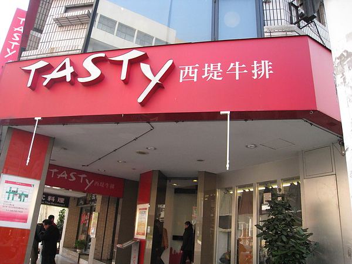
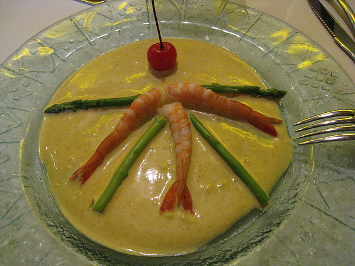
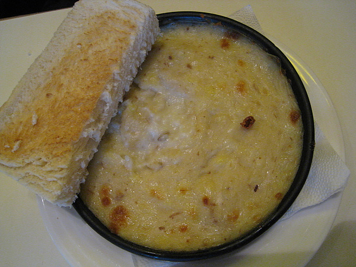
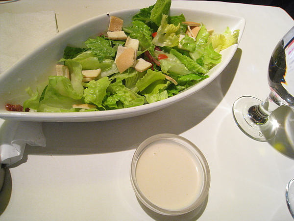
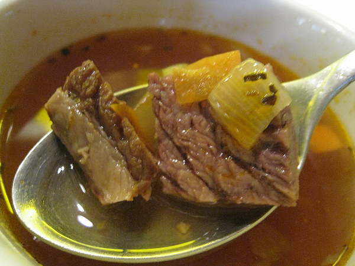
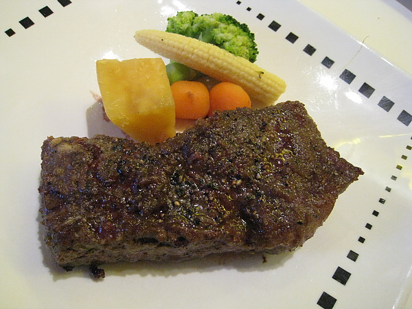
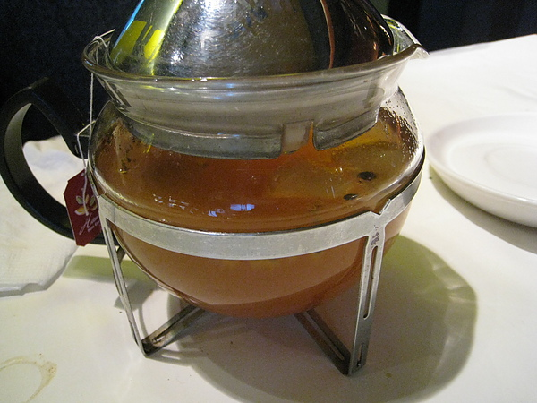
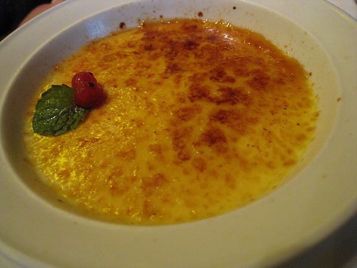

這個周末家中心血來潮想說來西堤聚餐就來個吃飽飽吧~

這道開胃菜是鮮蝦蘆筍，是每次來必定會吃的！它的咖哩優格醬配上小小的蝦子跟鮮美的蘆筍實在是絕配

這道前菜是焗烤磨菇+方塊麵包，味道有點像焗烤使用的白醬有濃郁的奶香起司味道，
稠糊的口感，入口只會感覺到滿口香濃的滋味，偶爾會看到幾片磨菇片，這道超級無敵好吃的

這道是蘿美生菜沙拉，裡面的生菜是新鮮的！再配上帶點蒜味的凱薩沙拉醬，讓我敗在這道沙拉的腳底下，
蔬菜給的很豐富，有蘿美生菜、紫萵苣、小番茄和麵包丁，分量蠻多，可以吃飽飽的。

這道是牛肉湯，其實湯的味道就是稀釋過比較淡的羅宋湯，喝起來也很清爽可口 牛肉塊還真不少~而且吃起來有咬勁，卻還覺得蠻嫩的!

再來就是主餐了，這道是酥烤牛排是上選Choice級牛排，有先煎再烤過，所以是完全把牛肉的原味封鎖住，我點七分熟，這道比較多汁，喜歡吃嫩牛排的朋友們~就要試試看這道

主餐吃完接著就是飲料啦!~這道是熱水果茶，有水果香氣，但是裡面有放茶包一起泡，最好早點喝完 不然茶包會出現澀澀的感覺喔~這壺還蠻大壺的，適合大家一起喝

最後就是甜點啦~(鏘鏘鏘)
是烤布蕾((灑花
這道是我的最愛，吃完有種上天堂的感覺，這道真的很推薦。